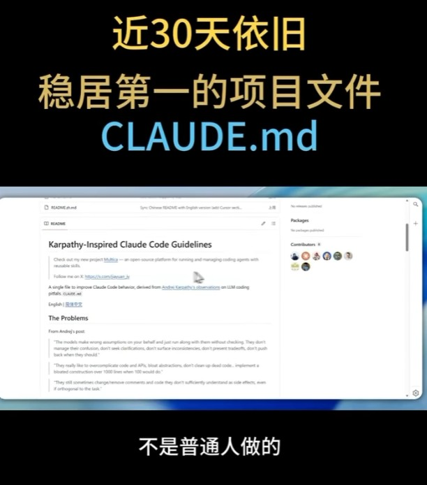
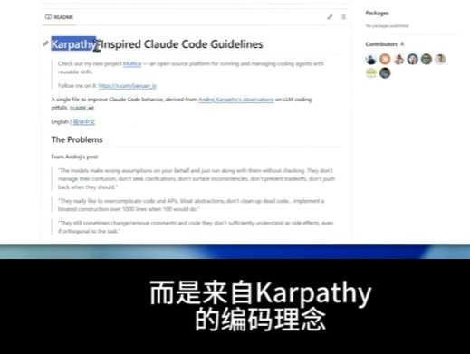
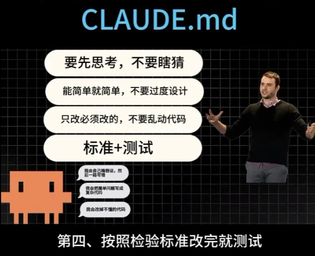

Facebook Reel｜CLAUDE.md 變成 AI 員工守則：Karpathy-inspired Claude Code Guidelines 的管理型 prompt

為什麼保存
這則 Facebook Reel 的重點不是介紹新模型，也不是新 agent，而是把 `CLAUDE.md` 形容成「AI 員工守則」：開發者不只要會下 prompt，還要會把專案規則、寫碼習慣、測試標準與禁止事項寫成 AI 可以長期遵守的工作規範。
這和近期 AI coding 的實務趨勢相符：真正昂貴的成本常常不是 token，而是 AI 自作主張造成的返工、過度抽象、亂改無關檔案與沒有測試的修補。因此，`CLAUDE.md` 的價值在於把「一次性 prompt」提升成「專案治理文件」。
截圖與文案可見重點
使用者提供的文案主張：
> 現在 GitHub 最火的，不是模型，不是 Agent，而是一個文件：CLAUDE.md。以前大家在比誰 Prompt 寫得強，現在開始變成誰比較會「管理 AI」。CLAUDE.md 本質上很像 AI 員工守則，可以提前告訴 AI 怎麼寫程式、哪些東西不能碰、專案架構怎麼走、命名規則、回覆格式與開發習慣。AI 最大成本不是 token，而是返工；熱門方向不是讓 AI 更自由，而是讓 AI 更守規矩。
三張截圖呈現：
- 「近 30 天依舊穩居第一的專案文件 CLAUDE.md」與 GitHub README 畫面。
- README 標題可見為 `Karpathy-Inspired Claude Code Guidelines`，並提到 derived from Andrej Karpathy's observations on LLM coding pitfalls。
- 視覺化守則包含：先思考不要瞎猜、能簡單就簡單不要過度設計、只改必須改的不要亂動代碼、標準 + 測試。

查核：GitHub 專案實際內容
可對應到 GitHub repo：`BurukalaManiReethika/Karpathy-Inspired-Claude-Code-Guidelines`。
Repo README 把 Karpathy 對 coding agents 的觀察整理成 6 個可執行原則：
| 原則 | 解決的問題 |
|---|---|
| Think Before Coding | 靜默假設、沒有先釐清、混淆不外顯 |
| Simplicity First | 過度工程、過早抽象、PR 膨脹 |
| Surgical Changes | 順手重構、風格漂移、亂改無關程式碼 |
| Goal-Driven Execution | 任務模糊、沒有成功標準、done state 不清楚 |
| Reproduce Before Fixing | 盲目修補、沒有測試覆蓋、隱藏回歸 |
| Communicate Tradeoffs | 架構決策靜默發生、沒有呈現替代方案 |
README 也建議把規則放到專案根目錄的 `CLAUDE.md`，或透過 Claude Code plugin 在多專案共用。其設計目標是把「AI coding agent 容易犯的錯」轉成專案層級的預設規範。
需要注意的是：GitHub API 查核時，該 repo 約 26 stars、3 forks，且 API 未識別到正式 license 檔；README 內文雖寫 MIT，但沒有同等於 GitHub license metadata。因此本文不採信「GitHub 近 30 天第一」為客觀排名，只把它視為 Reel 的社群敘事與導流 framing。
查核：Anthropic 官方 CLAUDE.md 背景
Anthropic Claude Code 官方文件 `How Claude remembers your project` 說明：每次 Claude Code session 都是新的 context window，但可透過兩種機制跨 session 保留知識：
- `CLAUDE.md` files：由使用者撰寫，提供 Claude 持久性的專案脈絡與指令。
- auto memory：由 Claude 自動累積學到的內容。
官方文件也明確提到 Claude Code reads `CLAUDE.md`, not `AGENTS.md`；若 repo 已經有 `AGENTS.md`，可以建立 `CLAUDE.md` 並 import，讓不同 coding agents 共用規則但保留 Claude-specific instructions。
所以，Reel 把 `CLAUDE.md` 稱為「AI 員工守則」是合理的比喻；但它不是萬能 prompt，也不保證 AI 絕不犯錯。它更像「降低錯誤率與返工成本的治理層」。

對欒帥的可用改寫：AI 專案守則模板
若要把這個概念用在 Hermes、課程或學生專案，可以用以下結構建立 `CLAUDE.md` / `AGENTS.md`：
```markdown
Project AI Working Rules
Mission
- 先說明這個專案的目的、使用者、不可破壞的核心流程。
Before coding
- 先閱讀相關檔案，不要猜。
- 不確定時先列出假設與需要確認的點。
- 大改動前先提出計畫。
Coding style
- 命名規則、語言版本、格式化工具、型別要求。
- 不要引入不必要抽象；能簡單就簡單。
Boundaries
- 不碰 credentials、個資、部署設定與生產資料。
- 不改無關檔案，不做順手重構。
Verification
- 修 bug 前先重現。
- 改完跑測試、lint、build。
- 回覆中列出驗證結果與仍然未知的風險。
Communication
- 需要權衡時列出 2–3 個方案。
- 回覆格式固定：變更摘要、驗證、風險、下一步。
```
這份文件可以放在 repo 根目錄，或針對不同工具分成 `CLAUDE.md`、`AGENTS.md`、`.github/copilot-instructions.md`，再用 import / symlink 維持一致。
風險與限制
- 社群熱門不等於 GitHub 官方排名：截圖中的「近 30 天第一」無法由本次公開資料驗證。
- CLAUDE.md 不是安全邊界：敏感操作、金鑰、個資、付款與生產資料仍需工具權限與流程控管。
- 規則太長會降低可用性：應把高頻、穩定、可驗證的規則放進文件，避免塞入一堆一次性任務。
- 不同 agent 讀取規則方式不同：Claude Code 讀 `CLAUDE.md`；其他工具可能讀 `AGENTS.md`、`copilot-instructions.md` 或自訂設定。
- 最佳做法是「守則 + 測試 + 權限」：單靠文件無法取代 CI、code review、secret scanning 與最小權限。
相關連結
- Facebook Reel canonical：`https://www.facebook.com/reel/1001012822424411/`
- Karpathy-Inspired Claude Code Guidelines：https://github.com/BurukalaManiReethika/Karpathy-Inspired-Claude-Code-Guidelines
- Anthropic Claude Code memory / CLAUDE.md 文件：https://docs.anthropic.com/en/docs/claude-code/memory